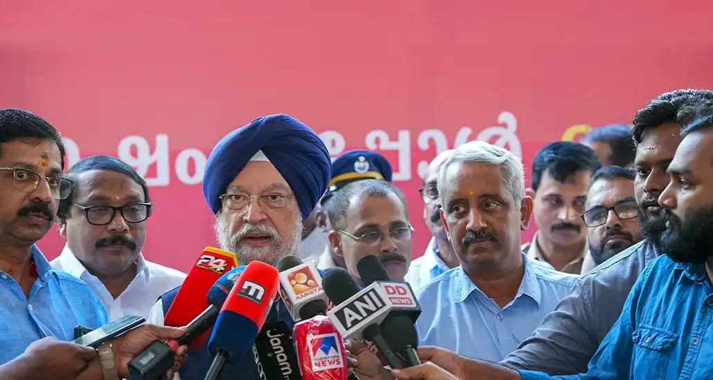

Ask us anything about your event.
Our assistant answers from 17 years of Icecube events, and shows you the proof behind every answer.
We're hosting a minister for a factory inauguration in March. What do we need to plan?
Answers come only from Icecube's own events and guidesAsk
What does a 300-guest conference cost?Have you handled VIP protocol?Show me inaugurationsHow early should we book?
Answer
For a ministerial inauguration you'll need protocol and security liaison, a ceremony flow, stage and public address, and crowd management. We handled all of these at the Malabar Milma factory inauguration, which ran for three days.
- Protocol and dignitary movement plan
- Stage, sound and LED for an open venue
- Permissions and security coordination
From our events

Malabar Milma Factory Inauguration3 days · Government coordination

Petroleum Minister's VisitPalakkad Fort Maidan · Open-air

KIED Enterprise CentreInauguration · Protocol